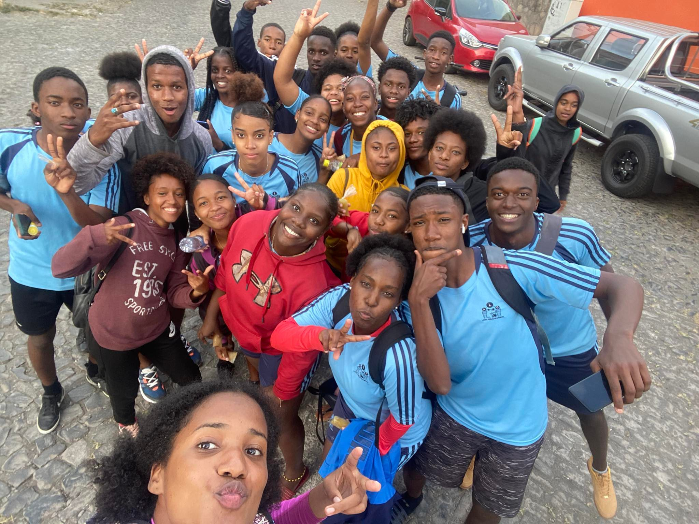

1.DO CONCURSO – O Concurso tem caráter exclusivamente recreativo e cultural, A participação neste Concurso é voluntária e gratuita, não sendo necessária a aquisição de qualquer produto, bem, direito ou serviço, bem como não implica em qualquer bônus, de qualquer natureza, para os Participantes inscritos no Concurso e para os Participantes premiados no final.
2. O projeto tem como objetivo revelar novos talentos da música e poderá contar com a reprodução de audições, avaliações, dinâmicas de ensaios, apresentações e auxílio de profissionais.
3. INSCRIÇÃO: O processo de inscrição dos participantes será realizado de 22 de abril a 29 de abril de 2022, através do nosso site.
3.1. No ato da inscrição, o participante deverá fornecer seus dados(nome-idade), enviar uma foto e anexar um vídeo atual, de até três (3) minutos, acompanhada de instrumento ou não.
3.2. Somente será aceita uma inscrição por participante, o qual deverá ter, no mínimo, 16 (dezesseis) anos completos. Em caso de seleção de candidato menor de 18 anos, o mesmo deverá apresentar, no ato da reunião, declaração de autorização, devidamente, assinada pelo seu responsável legal.
3.3. Serão permitidas as apresentações de duplas, trios /ou grupos.
3.4. Não serão aceitas inscrições que não cumpram as exigências contidas neste regulamento, especialmente, se a inscrição não vier acompanhada dos 03 (três) elementos especificados no item 3.1 e 3.2 , deste regulamento, implicando na automática desclassificação do candidato.
3.5. No ato da inscrição, está, automaticamente, autorizada a cessão de uso de imagem do participante, por prazo indeterminado, a partir da mesma, podendo as imagens serem editadas, adaptadas ou reduzidas para divulgação do concurso “SOLTE A VOZ”.
3.6. Os participantes serão selecionados através de processo de triagem, que ocorrerá entre os dias 25 de abril e 30de abril de 2022, sob responsabilidade de comissão técnica definida pelo organizador.
3.7. Após a triagem, haverá reunião com todos os selecionados, 01 de maio, às 18h, no auditório do Liceu Amílcar Cabral . Na ocasião, será realizado o sorteio da ordem de apresentação. O participante que não comparecer à reunião será informado da data e ordem da sua apresentação, por email ou contato telefônico, não podendo comparecer na reunião.
4. ETAPAS: Ocorrerão no Auditorio do Liceu Amilcar Cabral, a partir das 9hr e as 12hr. Seguindo o calendário abaixo: (I) Eliminatórias: 02/05, 03/05 e 04/05; (II) Semifinal: 11/05; (III) Final: 16/05.
4.1. Concorrerão 15 participantes, 03 (três) por eliminatória, para seleção de 02 (dois) por dia para a semifinal, que ocorrerá no dia 11 de maio, com a participação de 09 (nove) candidatos. Destes, 05 (cinco) serão selecionados para a final, que acontecerá no dia 16 de maio de 2022.
4.2. Os participantes poderão utilizar adereços de cena. Desde que estes possam entrar e sair do palco no mesmo instante de início e término da apresentação, sendo de responsabilidade do artista a colocação e a retirada destes elementos do palco.
4.3. Os candidatos não poderão repetir música em nenhuma das fases, além disso, há necessidade de aprovação por parte da comissão técnica do projeto.
4.4. O participante que não cumprir, pontualmente, o horário de sua apresentação será, automaticamente, eliminado do projeto. O tempo de apresentação de cada show deverá ter, no máximo, 05 minutos, nas eliminatórias, e até 03 minutos, nas fases semifinal e final.
4.5. Ao final de cada eliminatória, os resultados serão divulgados no local das apresentações para os participantes e plateia. Para posterior consulta, os mesmos estarão disponíveis no site e redes sociais do organizador.
5.COMISSÃO JULGADORA: Os participantes serão avaliados por uma comissão indicada pela coordenação do concurso. A decisão do júri será soberana e não caberá recurso.
6.DO JULGAMENTO: Serão utilizados para critérios de julgamento: afinação, dicção, postura de palco e interpretação. A menor nota deverá ser descartada para que nenhum candidato seja prejudicado. A nota mínima é 5 (cinco) e a máxima 10 (dez). Serão fracionadas notas em décimos.
7.DO CONCURSO E PREMIAÇÃO: Serão abertas 15 vagas para o “SOLTE A VOZ” – sendo 5 apresentações em cada eliminatória, 8 na semifinal e 5 apresentações na grande final.
7.1. Os 5 finalistas serão premiados, sendo:
1º COLOCADO: iPhone 7 32GB da Claro + direito de divulgação do trabalho na rádio 96 FM + Cesta de produtos cosméticos Mahogany;
2º COLOCADO: Guitarra Fender Squier Bullet HH BK + Cesta de produtos cosméticos Mahogany;
3º COLOCADO: Violão Giannini GSF – 1R Elétrico Natural + Cesta de produtos cosméticos Mahogany;
4º COLOCADO: Cesta de produtos cosméticos Mahogany;
5º COLOCADO: Cesta de produtos cosméticos Mahogany.
7.2. A premiação é pessoal e intransferível e será entregue na grande final.
Nós da turma 12ºCT1, no ambito da disciplina de portugues viemos fazer uma proposta a todos voçês que sejam livres, para se libertarem para o mundo da musica, essa competição não é pra mostrar quem é o melhor mas sim para mostrar o seu talento do que es capaz então pensem bem e Tamos juntos sempre.
"MINIX UM CUSA NU SA FINDA SCOLA FOI BUNITO TUDO QUES TEMPO QUE NUH PASSA DJUNTO, PRINCIPALMENTE NÓS QUERIDO PROFESSOR QUE SEMPRE DANO BOM AULA, TA PONU SEMPRE TA RI TA FAZENO FELIZ. NTA GARDICE NHX TD PAMO NUH CONXE CUMPANHERO PA NUH CA SQUECE DE CUMPANHERO NUNCA UNDE QUER QUE NO STA NUH LEMBRA SEMPRE DE CUMPANHERO, NO LEMBRA SMPRE DE TUDO QUE NUH PASSA.NOX PUSOR SEMPRE GENEROSO PUSSOR OBRIGADO PA TUDO AULAS CUH DANO E PRINCIPALMENTE OBRIGADO PA BUH PRESENÇA NA NOX VIDA NUH TA LEBAU SEMPRE NA NOX CORAÇÃO.NTA FLA NHX MUITO OBRIGADO POR TD MESMO.(AMIH CA GOSTA DE DISPIDIDA QUELI EH CA DISPIDIDA MAS SIM UM RECOMEÇO) "
ALUNOS CT1

O jovem rapper cabo-verdiano Trakinuz foi surpreendido com o facto de dois bailarinos da famosa artista Beyoncé terem feito uma coreografia ao som da sua música “Judite”, lançada recentemente. Leia mais »

Dino d’Santiago sobe hoje ao emblemático palco do Coliseu dos Recreios, em Lisboa, para um concerto de apresentação oficial do seu álbum mais recente, “Badiu”. O trabalho, editado em novembro do ano passado, aborda “um conjunto de canções inspiradas na jornada do povo Badiu do interior da ilha de Santiago até às metrópoles da América e Europa, até à minha Quarteira umbilical”, como chegou a retratar o cantor luso-cabo-verdiano. Leia mais »

“Fundu posu” é o mais novo trabalho do artista Ga Dalomba, que retrata a força e a “Garah” de lutar para sair de qualquer dificuldade. O single lançado hoje nas plataformas digitais, conta com a participação de Djodje. Leia mais »